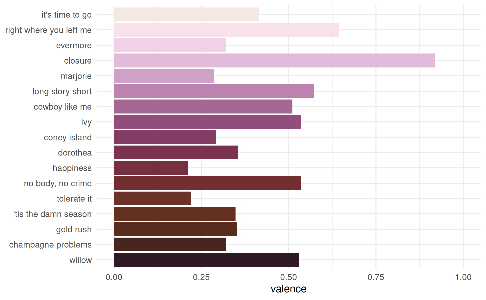
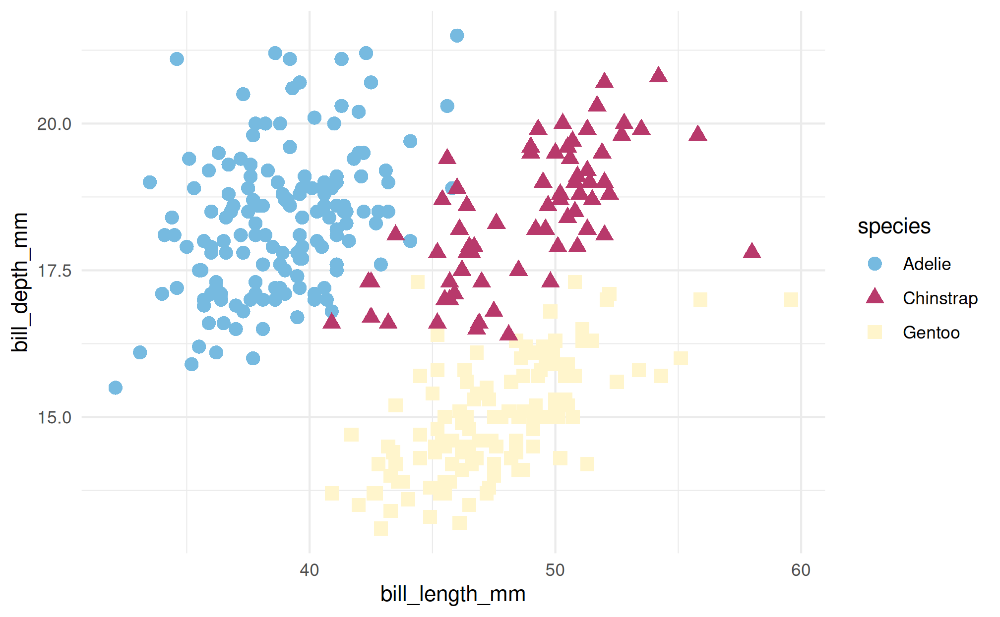
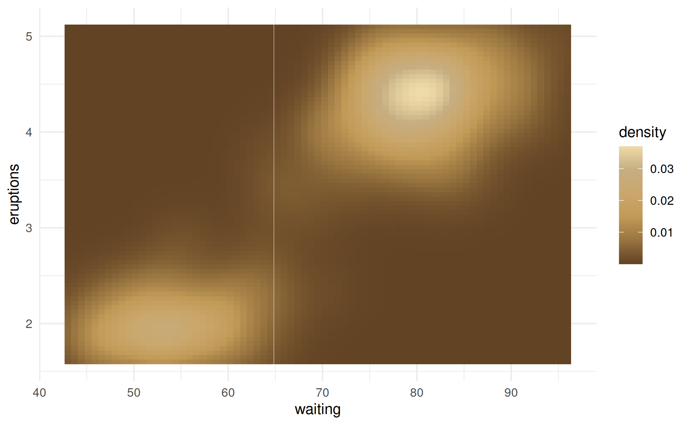
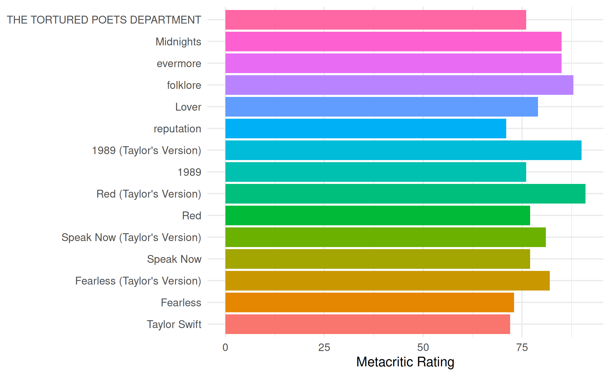
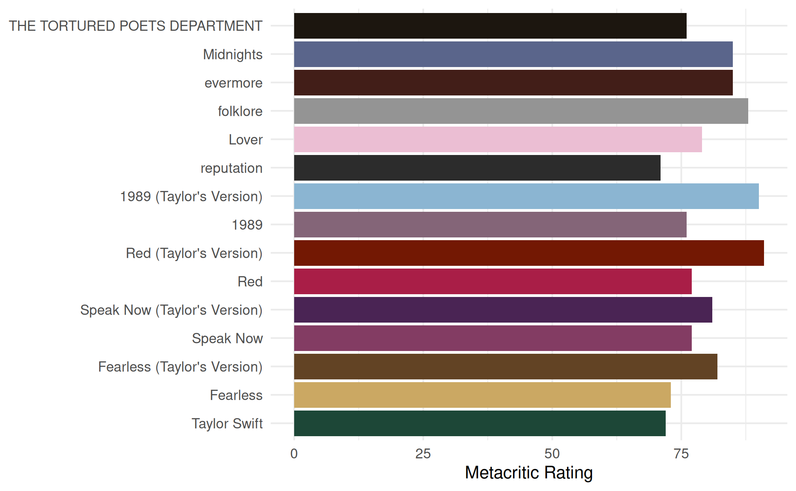
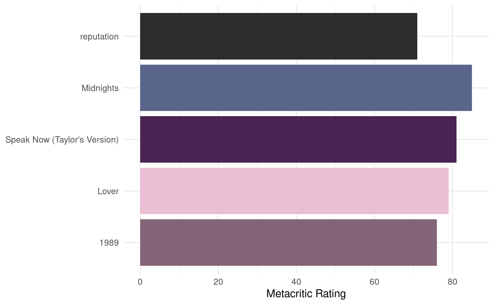

In addition to data sets, {taylor} also includes a few helper functions for easily making plots created with {ggplot2} have a Taylor Swift theme. For this vignette, I’m assuming you are already familiar with {ggplot2} and can make basic plots.
Once you have a ggplot created, you can add album-themed color palettes to your plots using the family of scale_taylor functions:
- Discrete scales:
- Continuous scales
- Binned scales
Discrete scales
First, let’s make a bar graph showing the valence of each song on evermore.
library(taylor)
library(ggplot2)
evermore <- subset(taylor_album_songs, album_name == "evermore")
evermore$track_name <- factor(evermore$track_name, levels = evermore$track_name)
p <- ggplot(evermore, aes(x = valence, y = track_name, fill = track_name)) +
geom_col(show.legend = FALSE) +
expand_limits(x = c(0, 1)) +
labs(y = NULL) +
theme_minimal()
pWe can then add some evermore-inspired colors using scale_fill_taylor_d().
p + scale_fill_taylor_d(album = "evermore")
The album argument can be changed to use a different Taylor-inspired palette. For example, we can switch to Speak Now using album = "Speak Now".
p + scale_fill_taylor_d(album = "Speak Now")
We can also use these functions for non-Taylor Swift data. For example, here we use scale_color_taylor_d() to plot some data from the {palmerpenguins} package.
library(palmerpenguins)
ggplot(penguins, aes(x = bill_length_mm, y = bill_depth_mm)) +
geom_point(aes(shape = species, color = species), size = 3) +
scale_color_taylor_d(album = "Lover") +
theme_minimal()
Continuous and binned scales
When using a continuous scale, values are interpolated between the colors defined in each palette. The Fearless (Taylor’s Version) palette is a particularly good use case for this. To illustrate, we’ll use the classic example included in the {ggplot2} package of the eruptions of the Old Faithful geyser and the duration of the eruptions.
p <- ggplot(faithfuld, aes(waiting, eruptions, fill = density)) +
geom_tile() +
theme_minimal()
p + scale_fill_taylor_c(album = "Fearless (Taylor's Version)")
Similarly, both the reputation and folklore palettes work great for gray scale images.
p + scale_fill_taylor_c(album = "reputation")
p + scale_fill_taylor_c(album = "folklore")
Just like with other {ggplot2} scales, we can also use the _b variants to create a binned color scale.
p + scale_fill_taylor_b(album = "evermore")Album scales
Finally, there is an album scale that can be used when plotting data from multiple albums. Take for example the Metacritic ratings of Taylor’s albums, stored in taylor::taylor_albums.
taylor_albums
#> # A tibble: 13 × 4
#> album_name ep album_release metacritic_score
#> <chr> <lgl> <date> <int>
#> 1 Taylor Swift FALSE 2006-10-24 NA
#> 2 The Taylor Swift Holiday Collection TRUE 2007-10-14 NA
#> 3 Beautiful Eyes TRUE 2008-07-15 NA
#> 4 Fearless FALSE 2008-11-11 73
#> 5 Speak Now FALSE 2010-10-25 77
#> 6 Red FALSE 2012-10-22 77
#> 7 1989 FALSE 2014-10-27 76
#> 8 reputation FALSE 2017-11-10 71
#> 9 Lover FALSE 2019-08-23 79
#> 10 folklore FALSE 2020-07-24 88
#> 11 evermore FALSE 2020-12-11 85
#> 12 Fearless (Taylor's Version) FALSE 2021-04-09 82
#> 13 Red (Taylor's Version) FALSE 2021-11-12 96Let’s create a bar graph showing the rating of each album. We’ll first make the album name a factor variable. A convenience variable, taylor::album_levels, is included in the package that will let us easily order the factor by album release date.1 Metacritic doesn’t have a rating for Taylor’s debut album, Taylor Swift, so I will manually assign a value so that we can see the full scale in action. We’ll give each bar its own color to add some pizzazz to the plot.
metacritic <- taylor_albums
# Not Taylor's best work, so we'll give it a 72
metacritic$metacritic_score[1] <- 72L
metacritic <- subset(metacritic, !is.na(metacritic_score))
metacritic$album_name <- factor(metacritic$album_name,
levels = album_levels)
ggplot(metacritic, aes(x = metacritic_score, y = album_name)) +
geom_col(aes(fill = album_name), show.legend = FALSE) +
labs(x = "Metacritic Rating", y = NULL) +
theme_minimal()
This is nice, but wouldn’t it be better if each color was related to the album? Enter scale_fill_albums()!
ggplot(metacritic, aes(x = metacritic_score, y = album_name)) +
geom_col(aes(fill = album_name), show.legend = FALSE) +
scale_fill_albums() +
labs(x = "Metacritic Rating", y = NULL) +
theme_minimal()
The scale_fill_albums() and scale_color_albums() functions automatically assign color based on the album name. These are wrappers around ggplot2::scale_fill_manual() and ggplot2::scale_color_manual(), respectively. This means that the colors will still be assigned correctly, even if the ordering of the albums changes, or not all levels are present.
rand_critic <- metacritic[sample(seq_len(nrow(metacritic)), 5), ]
rand_critic$album_name <- factor(rand_critic$album_name,
levels = sample(rand_critic$album_name,
size = nrow(rand_critic)))
ggplot(rand_critic, aes(x = metacritic_score, y = album_name)) +
geom_col(aes(fill = album_name), show.legend = FALSE) +
scale_fill_albums() +
labs(x = "Metacritic Rating", y = NULL) +
theme_minimal()
However, this also means that album names must match the expected names. That is, if you change or reformat an album name, the fill colors won’t be found. For example, if we capitalize all the album titles, the fill color will be missing for reputation, folklore, and evermore, which are stylized in all lower case. The expected names are defined in the taylor::album_levels object.
upper_critic <- metacritic
upper_critic$album_name <- factor(upper_critic$album_name,
levels = album_levels,
labels = title_case(album_levels))
ggplot(upper_critic, aes(x = metacritic_score, y = album_name)) +
geom_col(aes(fill = album_name), show.legend = FALSE) +
scale_fill_albums() +
labs(x = "Metacritic Rating", y = NULL) +
theme_minimal()